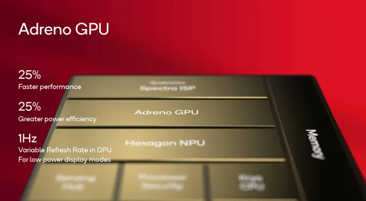
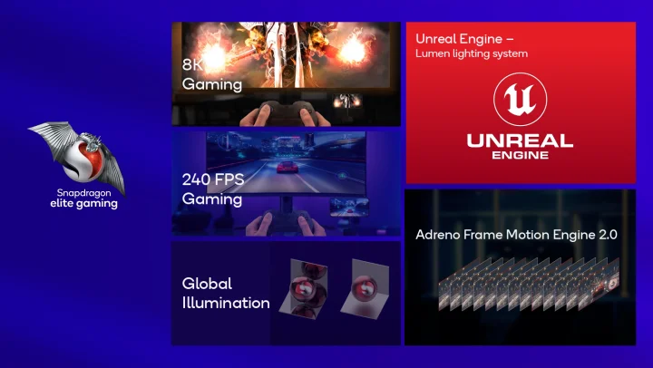

Spesifikasi Snapdragon 8 Gen 3
Qualcomm Snapdragon 8 Gen 3 hadir dengan Octa Core CPU Kryo. Ini terdiri dari 1 core Prime 3.3 GHz berbasis Cortex-X4, 5 core Performance 3.2 GHz, serta 2 core Efficiency hingga 2.3 GHz. Peningkatan dari generasi sebelumnya dijanjikan sampai 30% untuk performa dan 20% untuk efisiensi daya.

Dukungan memorinya yaitu RAM LPDDR5X hingga kecepatan 4800 MHz. Sementara untuk kapasitas, bisa sampai 24 GB. Sedangkan storagenya, pastinya sudah menggunakan standar terbaru yang paling kencang saat ini, yaitu UFS 4.0. Untuk kemampuan grafisnya, GPU Adreno pada Snapdragon 8 Gen 3 memiliki peningkatan performa dan efisiensi hingga 25% dibandingkan Snapdragon 8 Gen 2. Selain itu, dukungan Ray Tracing ditingkatkan hingga 40%. SoC ini kabarnya bisa menjalankan game hingga 240 fps kalau dikombinasikan dengan display yang mendukung 240 Hz.
Untuk dukungan tampilan di perangkat, yaitu hingga 4K @60 Hz atau QHD+ @144 Hz, serta display eksternal hingga 8K @30 Hz atau 1080 @240 Hz. SoC ini dilengkapi juga dukungan fitur Variable Refresh Rate dengan rentang dari 240 Hz hingga 1 Hz. Ada juga dukungan warna 10-bit serta dukungan untuk standar HDR10, HDR10+, HDR Vivid, dan Dolby Vision.

Qualcomm Spectra Image Signal Processor pada Snapdragon 8 Gen 3 ini hadir dengan konfigurasi triple 18-bit ISP. Ini menawarkan sejumlah fitur andal. Berbagai dukungan perekaman yaitu iToF hingga 1080p30, dan dukungan untuk berbagai standar gambar HDR, termasuk DCG HDR, Staggered HDR, QDOL HDR, Less Blanking HDR, dan Multi-Frame HDR.
Snapdragon 8 Gen 3 juga mampu menangkap gambar hingga 200 megapiksel. SoC ini juga dilengkapi dengan deteksi wajah berbasis AI dan kedalaman warna hingga 10 bit untuk foto dan video.
Selain itu, perangkat ini mampu merekam video HDR hingga 8K @ 30 FPS, serta video 4K hingga 120 FPS. Fitur lainnya mencakup pemotretan Bokeh Engine 2, video Pro Sight, video Night Vision dengan pengurangan noise AI RAW pada 4K 60 FPS, video HDR komputasional hingga 4 eksposur, resolusi video super, reduksi noise multi-frame, dan penyaringan temporal yang dikompensasi gerakan lokal. Snapdragon 8 Gen 3 juga mendukung Truepic photo capture dengan sertifikat otoritas yang sesuai dengan C2PA.